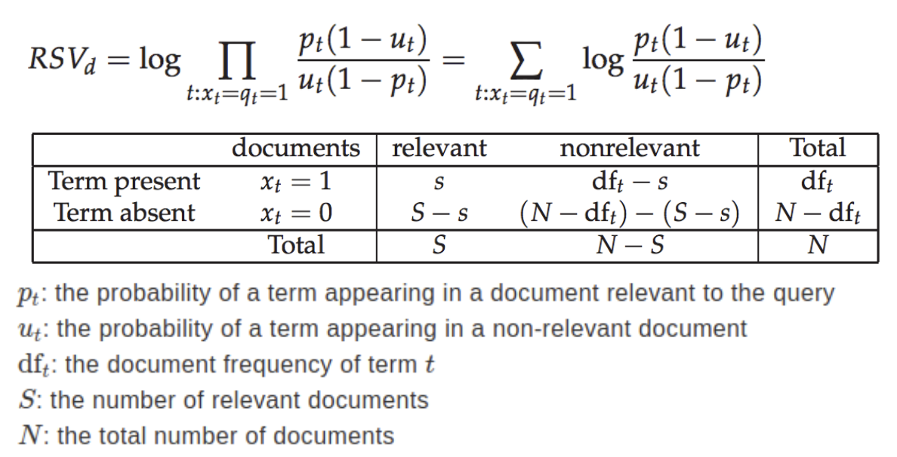
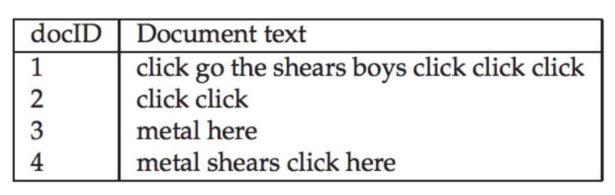
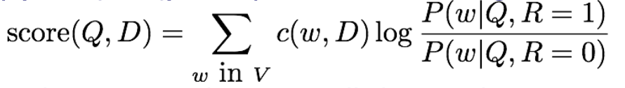

[20 points] Probabilistic Information Retrieval
Consider the RSJ retrieval model, the contingency table of counts of documents, and the statements below:

Ans：
Weighting：VSM with tf-idf using tf-idf weight for each term in document or query represent while RSJ model calculating probabilistic weights aim to maximize probability of retrieving relevant documents.
Assumption：VSM with tf-idf assume that the rare terms are more useful for identifying a document's unique content, while RSJ assume that the independence of terms, that is every term appear independently of each other within documents, simplifying probability calculations.
Ans：
VSM with Relevance Feedback: The modified query is created by adding and subtracting average vector of relevant and non-relevant documents from original query vector. Also shifting the query towards relevant documents in the vector space, helping to retrieve similar documents in next iteration.
RSJ Model with Relevance Feedback: feedback updates probability estimates for improved ranking of relevant documents.
Ans：
=
=> ：Probability of term appearing in relevant documents.
=> ：Probability of term appearing in non-relevant documents.
=> Substitute and into the RSJ model：
=>
=> Simplified: devide S*(N-S)
[20 points] Language Model
Consider making a language model from the following training text:
she grows flowers in the garden
the flowers she grows are surely flowers
so if she grows flowers in the garden
I am sure she grows garden flowers
Ans：
total words: 28
unigram count: (the: 3), (garden: 2)
Ans：
unigram count: (grows: 4), (she: 4)
bigram count: (grows, flowers: 3), ((she, grows: 4)
[15 points] Language Model
Suppose we have a collection that consists of the 4 documents given in the below table.

Build a query likelihood language model for this document collection. Assume a mixture model between the documents and the collection, with both weighted at 0.5. Maximum Likelihood Estimation (MLE) is used to estimate both as unigram models. Work out the model probabilities of the queries click, shears, and hence click shears for each document, and use those probabilities to rank the documents returned by following query.
Term Frequency：
| Term | Doc1 | Doc2 | Doc3 | Doc4 | CTotal |
|---|---|---|---|---|---|
| click | 4 | 2 | 0 | 1 | 7 |
| go | 1 | 0 | 0 | 0 | 1 |
| the | 1 | 0 | 0 | 0 | 1 |
| shears | 1 | 0 | 0 | 1 | 2 |
| boys | 1 | 0 | 0 | 0 | 1 |
| metal | 0 | 0 | 1 | 1 | 2 |
| here | 0 | 0 | 1 | 1 | 2 |
| Total | 8 | 2 | 2 | 4 | 16 |
Maximum Likelyhood Estimation (MLE)：( Prob of each term in specific doc )
Collection MLE ( Probability of each term in the collection )
| Term | |||||
|---|---|---|---|---|---|
| click | 0 | ||||
| go | 0 | 0 | 0 | ||
| the | 0 | 0 | 0 | ||
| shears | 0 | 0 | |||
| boys | 0 | 0 | 0 | ||
| metal | 0 | 0 | |||
| here | 0 | 0 |
Query Likelihood Calculation Using Mixture Model
| Doc ID | |
|---|---|
| doc2 | 0.5×1.0 + 0.5×0.47 = 0.735 |
| doc1 | 0.5×0.5 + 0.5×0.47 = 0.485 |
| doc3 | 0.5×0 + 0.5×0.47 = 0.235 |
| doc4 | 0.5×0.33 + 0.5×0.47 = 0.4 |
Ans: doc2 > doc1 > doc3 > doc4
| Doc ID | |
|---|---|
| doc1 | 0.5×0.125 + 0.5×0.133 = 0.129 |
| doc2 | 0.5×0 + 0.5×0.133 = 0.067 |
| doc3 | 0.5×0 + 0.5×0.133 = 0.067 |
| doc4 | 0.5×0.33 + 0.5×0.133 = 0.232 |
Ans: doc1 > doc2 > doc3 > doc4
| Doc ID | |
|---|---|
| doc4 | 0.4 × 0.232=0.0928 |
| doc1 | 0.485 × 0.129=0.0625 |
| doc2 | 0.735 × 0.067=0.0492 |
| doc3 | 0.235 x 0.067 = 0.0157 |
Ans: doc4 > doc1 > doc2 > doc3
[10 points] Mixture model
Given the query "Hualien Taoyuan", please compute the ranking of the three documents by MLE unigram models from the documents and collection, mixed with lambda = 1/2
Term Frequencies
| Term | ||||
|---|---|---|---|---|
| Hualien | ||||
| Taoyuan |
Mixture Model Probabilities (with 𝜆 = 0.5)
| Term | |||
|---|---|---|---|
| Hualien | 0.5×0.25 + 0.5×0.217 = 0.2335 | 0.5×0.25 + 0.5×0.217 = 0.2335 | 0.5×0.143 + 0.5×0.217 = 0.18 |
| Taoyuan | 0.5×0.125 + 0.5×0.13 = 0.1275 | 0.5×0.125 + 0.5×0.13 = 0.1275 | 0.5×0.143+0.5×0.13=0.1365 |
Query Likelihood for "Hualien Taoyuan" in Each Document
ANS:
Ranking：
1 Document 1: 0.0298
2 Document 2: 0.0298
3 Document 3: 0.02457
[35 points] Classic Probabilistic Retrieval Model.
[15/35 points] In the derivation of the Robertson-Sparck-Jones (RSJ) model (see the slides and the survey paper by Norbert Fuhr for detail about this derivation), a multi-variate Bernoulli model was used to model term presence/absence in a relevant document and a non-relevant document. Suppose, we change the model to a multinomial model (see the slide that covers both models for computing query likelihood). Using a similar independence assumption as we used in deriving RSJ, show that ranking based on probability that a document is relevant to a query Q, i.e., p(R=1 | D,Q), is equivalent to ranking based on the following formula:

where the sum is taken over all the word in our vocabulary (denoted by V). How many parameters are there in such a retrieval model?
- Assume each word in our vocabulary appears independently.
- Compute Using Bayes' theorem
=>- Assume is constant
=>- Assume that document is generated by drawing words from a multinomial distribution conditioned on relevance
=>
=> where is the frequency of word in document- Log-Likeligood and simplified ranking formula:
=>
=>
=>
=>
=> (Q.E.D)
Ans:
Ans:
To improve:
- Length Normalization: Apply a BM25-style normalization, adjusting with document length
- Smoothing: Use some smoothing methods to handle rare terms and zero frequencies in P(q\mid Q, R=1) or P(w\mid Q, R=0)